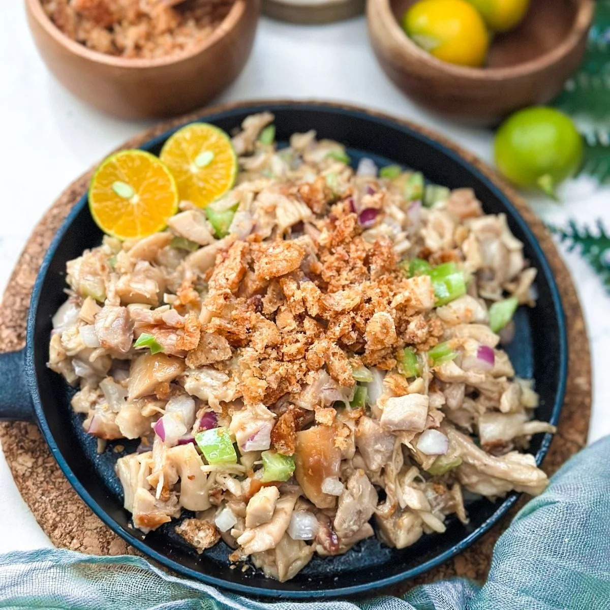

Ingredients
- 1 lb pig ears
- 1 lb pig snout
- 1 lb pork belly
- 2 pieces onions, minced
- 3 pieces bay leaves
- 2 teaspoons salt
- 4 thumbs ginger, crushed
- 1 quart water
Sisig Dressing
- ½ cup Lady’s Choice Mayonnaise
- 2 tablespoons sukang iloko (or substitute with cane, white, or distilled vinegar)
- ¼ teaspoon ground black pepper
- 1 teaspoon salt
- 1 teaspoon sugar
- ¼ cup liver spread (or boiled and mashed chicken liver)
- 2 limes or calamansi if available
- 1 tablespoon Knorr Liquid Seasoning
Equipment
Instructions
- Combine pig ears, snout, pork belly, ginger, bay leaves, salt, and water in a cooking pot. Boil for 1 hour. Remove from pot and drain water.
- Heat grill and grill the pig parts for around 5 minutes per side. Let cool afterward.
- Make the dressing by combining all dressing ingredients and mixing well.
- Chop the grilled pig parts into small pieces and place in a large mixing bowl. Combine with onion and dressing mixture, tossing until well blended.
- Transfer to a serving plate and serve with your favorite drink. Enjoy!
